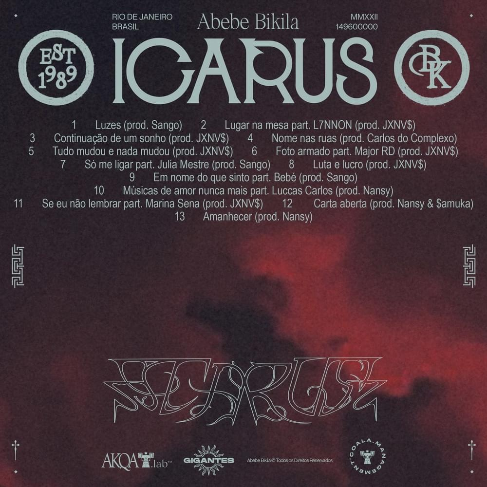
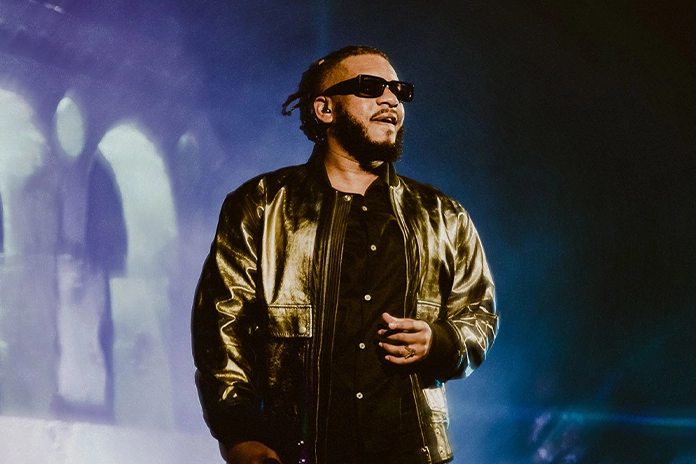
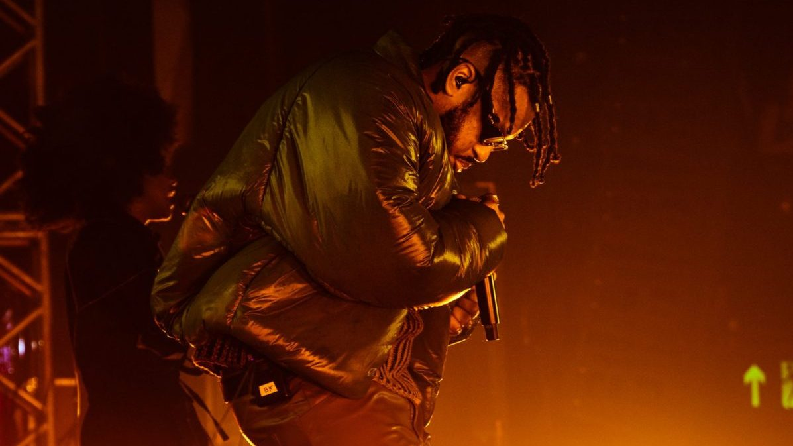
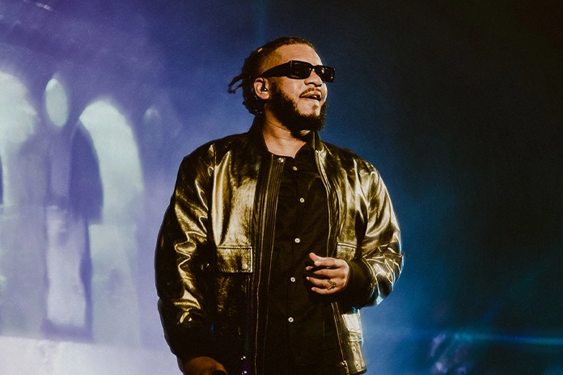
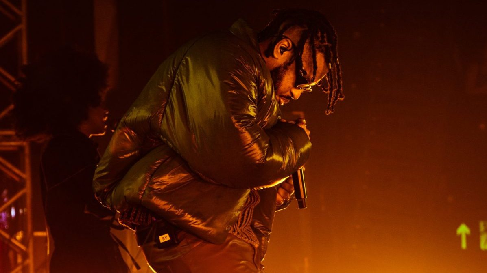
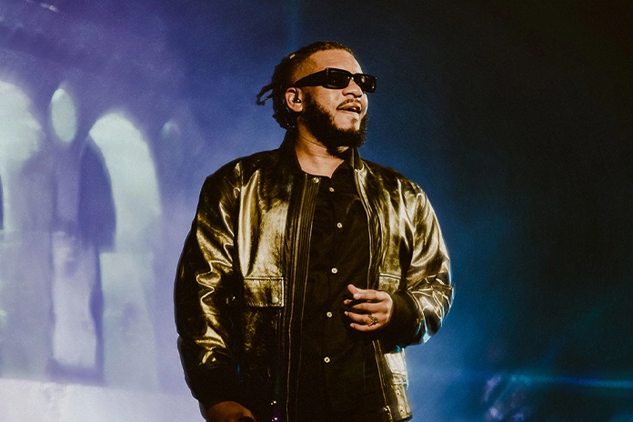
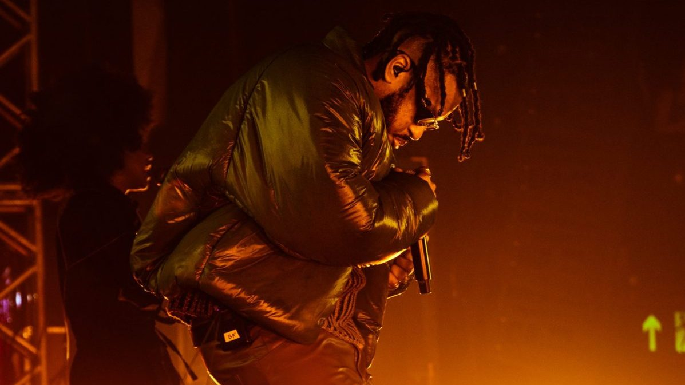

BK' ICARUS
O quarto álbum de estúdio do BK' aborda o mito de ICARUS, cuja reflexão é sobre os desejos humanos e as consequências da ambição sem fim, representando “o voo do BK' rumo às luzes e o limite entre a ascensão e a queda”.
+210 milhões deplays no Spotify
Mais de 140 dias nasparadas de álbuns do Spotify BR
Shows de estreiaesgotados
Leão de BronzeCannes Lions 2023
Latin AmericanDesign Awards 2023
3x PrêmiosClio Awards 2024
Leão de BronzeCannes Lions 2023
Latin AmericanDesign Awards 2023
3x PrêmiosClio Awards 2024
No show de estreia da turnê, ficamos responsáveis pela Direção de Vídeo, desde o conceito até a finalização do Registro Audiovisual "ICARUS AO VIVO".
 

